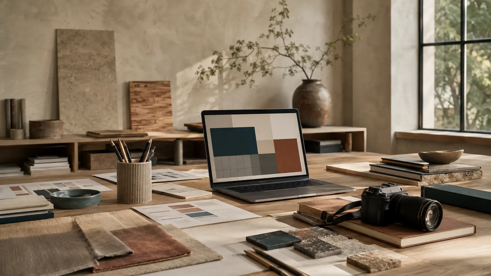
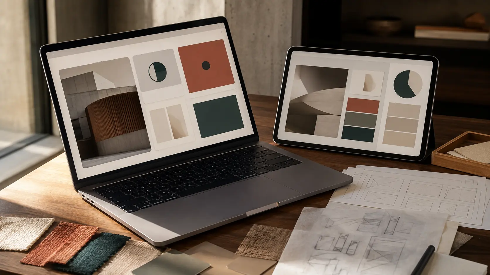
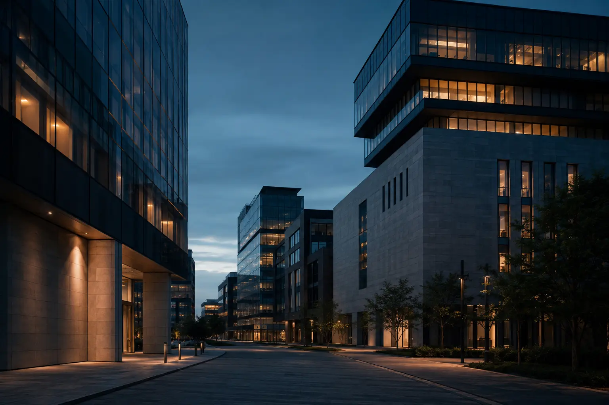
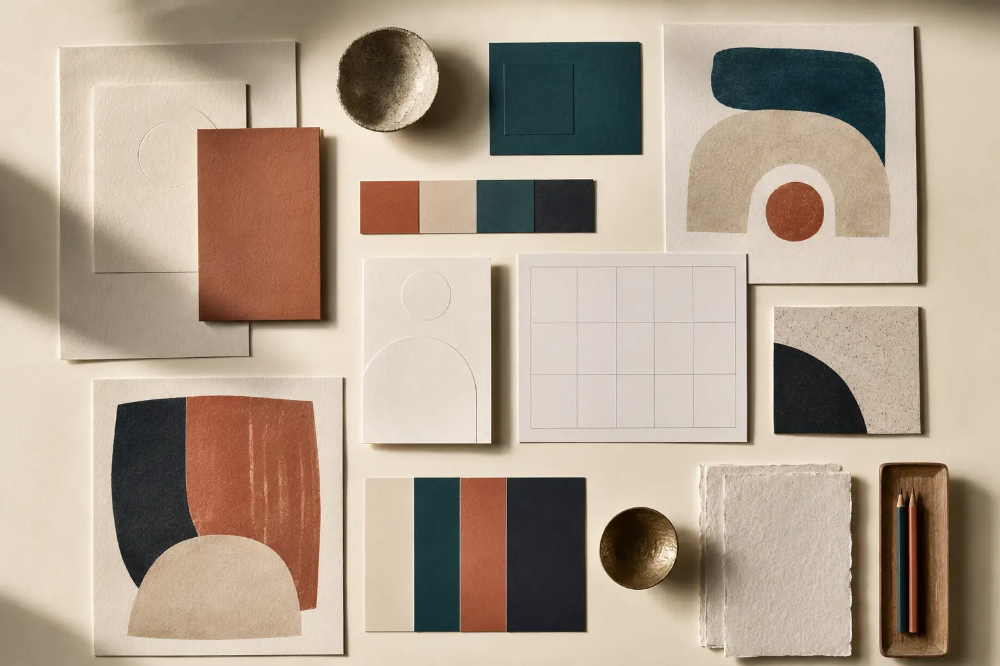

Принцип отбора
Портфолио — не склад выполненных задач.
Здесь остаются проекты, в которых видны мысль, решение и результат. Остальное сохраняется в рабочем архиве.
Дизайн, цифровые продукты и редакционные проекты — от первого исследования до цельной публикации.

Большой кейс, самостоятельная серия и короткое наблюдение не обязаны выглядеть одинаково. Эта подборка сохраняет их собственный ритм.

Главный кейсИсследование, продуктовая логика, интерфейс и запуск.

Редакционная серия
АйдентикаЗдесь остаются проекты, в которых видны мысль, решение и результат. Остальное сохраняется в рабочем архиве.
Разбираю задачу, контекст и реальные ограничения.
Связываю исследование, содержание и визуальную систему.
Довожу решение до состояния, которым можно пользоваться.
«Хорошая форма не закрывает смысл. Она помогает его увидеть».
Работаю с независимыми авторами, культурными проектами и небольшими командами, которым нужен цельный результат без лишнего шума.